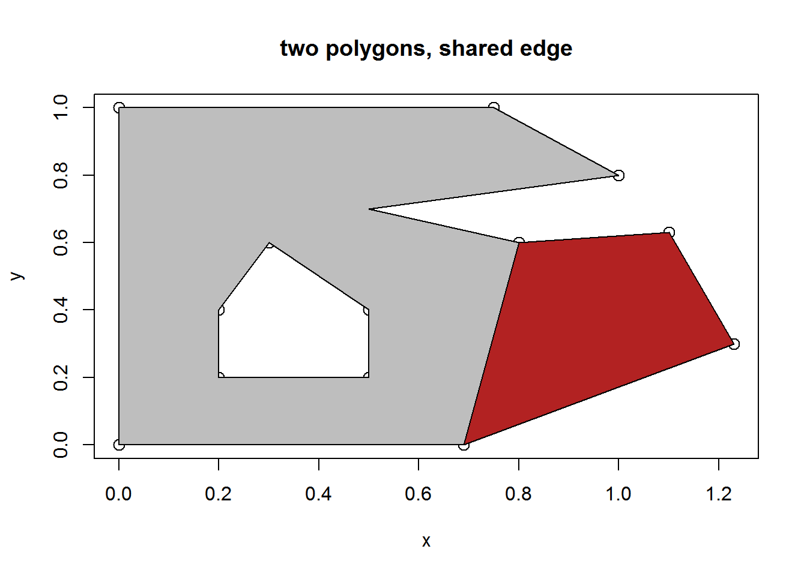
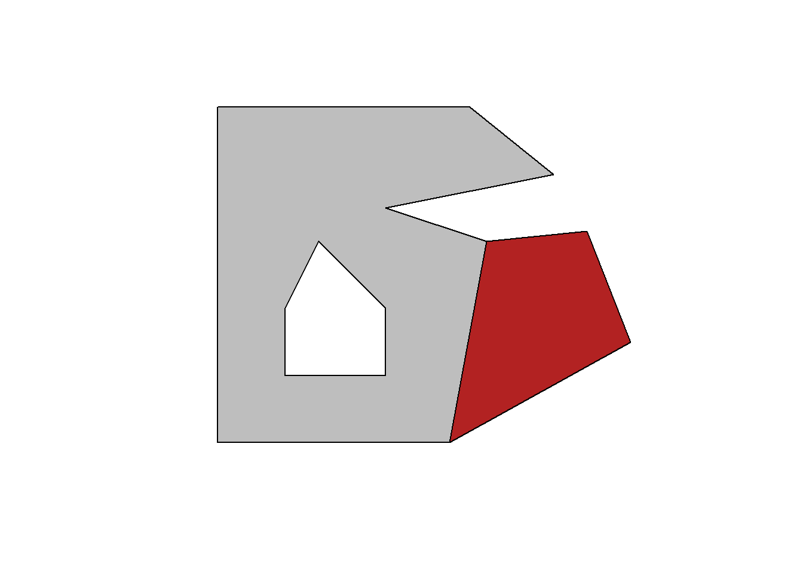

Simple features and the spatial zoo
Michael D. Sumner
2017-02-28
Base graphics
p1 <- cbind(x = c(0, 0, 0.75, 1, 0.5, 0.8, 0.69, 0),
y = c(0, 1, 1, 0.8, 0.7, 0.6, 0, 0))
p2 <- cbind(x = c(0.2, 0.2, 0.3, 0.5, 0.5, 0.2),
y = c(0.2, 0.4, 0.6, 0.4, 0.2, 0.2))
p4 <- cbind(x = c(0.69, 0.8, 1.1, 1.23, 0.69),
y = c(0, 0.6, 0.63, 0.3, 0))
pp <- rbind(p1, NA, p2[nrow(p2):1, ])
plot(rbind(pp, p4), cex = 1.3, main = "two polygons, shared edge")
polypath(pp, col = "grey")
polypath(p4, col = "firebrick")
Simple features for R
#devtools::install_github("edzer/sfr")
library(sf)
library(tibble)
x <- st_as_sf(tibble(a = 1:2, geom = st_sfc(list(st_multipolygon(list(list(p1, p2[rev(seq(nrow(p2))), ]))),
st_multipolygon(list(list(p4)))))))
plot(st_geometry(x), col = c("grey", "firebrick"))
Spatial (legacy sp package)
library(sp)
spgdf <- as(x, "Spatial")
plot(spgdf, col = c("grey", "firebrick"))
Grammar of graphics
## fortify model
library(dplyr)
meta <- as_tibble(x %>% dplyr::select(-geom) %>% mutate(object_ = row_number()))
map <- PATH(st_as_sf(spgdf))
library(ggplot2)
ggcols <- ggplot2::scale_fill_manual(values = c("1" = "grey", "2" = "firebrick"))
ggplot(map %>% mutate(rn = row_number()) %>% inner_join(meta)) + aes(x = x_, y = y_, group = path_, fill = factor(object_)) +
ggcols + ggpolypath::geom_polypath() + geom_path()Map table
This is a four-table decomposition of Spatial objects, a normalization of the fortify model.
library(spbabel)
mp <- map_table(spgdf)
ggcols <- ggplot2::scale_fill_manual(values = setNames(c("grey", "firebrick"), mp$object$object_))
gg <- ggplot(mp$object %>% inner_join(mp$path) %>% inner_join(mp$path_link_vertex) %>% inner_join(mp$vertex))
gg + aes(x = x_, y = y_, group = path_, fill = object_) + ggcols + ggpolypath::geom_polypath() + geom_path(lwd = 2)Planar straight line graph
Here we identify all edges, i.e. line segments between a pair of coordinates, regardless of direction.
Note in the second plot we identify “nodes”, and that there are two segments that overlap between the neighbouring polygons. In Arc speak this is just one arc, but in simple features it is just a segment on one polygon path, and another segment on the other polygon path, without any explicit record or knowledge of that relationship.
p2seg <- function(x) as_tibble(rangl:::path2seg(x$vertex_))
BxE <- mp$path_link_vertex %>% split(.$path_) %>% purrr::map(p2seg) %>% bind_rows(.id = "path_")
ggplot(BxE %>% inner_join(mp$v %>% rename(x = x_, y = y_), c("V1" = "vertex_")) %>%
inner_join(mp$v, c("V2" = "vertex_"))) +
geom_segment(aes(x = x, y = y, xend = x_, yend = y_, colour = V1)) #+ guides(colour = FALSE)
uE <- mp$path_link_vertex %>% split(.$path_) %>% purrr::map(p2seg) %>% bind_rows(.id = "path_")%>% mutate(edge_ = row_number()) %>%
mutate(uu = paste(pmin(V1, V2), pmax(V1, V2), sep = "_")) %>% distinct(uu, .keep_all = TRUE)
nodes <- bind_rows(mp$v %>% dplyr::select(vertex_) %>% inner_join(uE, c("vertex_" = "V1")),
mp$v %>% dplyr::select(vertex_) %>% inner_join(uE, c("vertex_" = "V2"))) %>%
distinct(edge_, vertex_) %>%
group_by(vertex_) %>% mutate(nb = n()) %>% ungroup() %>%
filter(nb > 2) %>% distinct(vertex_) %>% inner_join(mp$v)
plot(spgdf)
points(nodes$x_, nodes$y_, cex = 0.9)Arc-node
NOT YET IMPLEMENTED
What is arc-node? The nodes in the graph are the vertices that are shared by any two arcs. The arcs are the paths that trace a line between nodes. This means that not all coordinates are nodes, and even that not all parts have any node/s at all. We can produce this by traversal of all edges to determine the arcs that join nodes and anything left is just a standalone arc. This is brute-force remove duplicate edges (ignore direction), join on start vertex, end vertex, count the number of edges involved and any with 3 edges is a Node.
## what are the nodes?
x1 <- st_read(system.file("shape/nc.shp", package="sf"), "nc", crs = 4267)
nodes <- arc_node(x1) ## NARC?
plot(st_geometry(x1))
points(nodes$x_, nodes$y_, cex = 0.9)Arc-node topology was used by the Arc Info software prior to the invention of the shapefile and ArcView . . .
TopoJSON uses this model, or at least something very similar to it: https://github.com/topojson/topojson/wiki
Simplicial complex
The simplicial complex is more abstract than arc-node topology, but also much more general. Arcs can only be joined to bound regions in the plane, but the simplicial complex is composed of primitives for any topology. Coordinates are 0-D primitives, line segments are 1-D primitives, and triangles are 2-primitives. We are free to store any chosen geometry on the coordinates of primitives, so they can describe overlapping surfaces in 3D space, or connected paths through 4D space. There’s a natual extension up in dimension to volumes as well, where 3-D primitives (tetrahedron) compose 3D-space filling shapes, and so on.
In short, arc-node is one of several 2D-only optimizations for spatial data that do no apply to higher dimensional topologies and/or higher dimensional geometry. The simplicial complex is a finite-element model that is general enough for any spatial or other hierarchically organized multi-dimensional data.
sc <- rangl::rangl(spgdf)
plot(sc)
plot(x)
l1 <- inner_join(sc$o[1, ], sc$t) %>% split(.$triangle_) %>% purrr::map(function(x) inner_join(x, sc$tXv) %>% inner_join(sc$v))
j <- lapply(l1, function(x) polygon(cbind(x$x_, x$y_), col = "grey"))
l2 <- inner_join(sc$o[2, ], sc$t) %>% split(.$triangle_) %>% purrr::map(function(x) inner_join(x, sc$tXv) %>% inner_join(sc$v))
j <- lapply(l2, function(x) polygon(cbind(x$x_, x$y_), col = "firebrick"))
## this is slow but does show that we have a full and constrained triangulation
set.seed(75)
sc <- rangl::rangl(as(x1[24:30, ], "Spatial"))
plot(x1[24:30, ], border = "black", lwd = 4)
for (i in seq(nrow(x1))) {
l1 <- inner_join(sc$o[i, ], sc$t, "object_") %>% split(.$triangle_) %>% purrr::map(function(x) inner_join(x, sc$tXv, "triangle_") %>% inner_join(sc$v, "vertex_"))
j <- lapply(l1, function(x) polygon(cbind(x$x_, x$y_), border = sample(c("grey", "firebrick", viridis::viridis(5)), 1)))
}